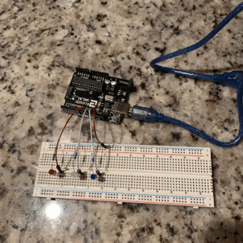

The prompt was to create a circuit with 3 LEDs that blink in a specific pattern. Checkout my process down below!

int LED1 = 13; //Green
int LED2 = 12; //Yelow
int LED3 = 11; // Red
void setup() {
//setup code that runs once:
pinMode(LED1, OUTPUT);
pinMode(LED2, OUTPUT);
pinMode(LED3, OUTPUT);
}
void loop() {
// put your main code here, to run repeatedly:
digitalWrite(LED1, HIGH); // turn on LED1
delay(100); // wait for 100ms
digitalWrite(LED2, HIGH); // turn on LED2
delay(100); // wait for 100ms
digitalWrite(LED3, HIGH); // turn on LED3
delay(100); // wait for 100ms
digitalWrite(LED1, LOW); // turn off LED1
delay(100); // wait for 100ms
digitalWrite(LED2, LOW); // turn off LED2
delay(100); // wait for 100ms
digitalWrite(LED3, LOW); // turn off LED3
delay(200); // Wait for 200ms before running program all over again
}